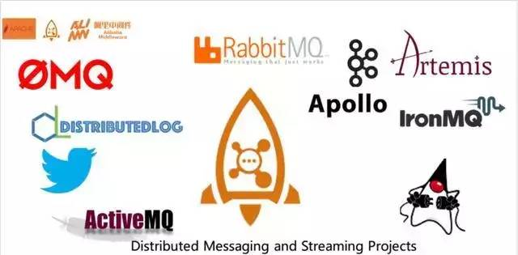

高并发架构系列：Kafka、RocketMQ、RabbitMQ的优劣势比较
在高并发业务场景下，典型的阿里双11秒杀等业务，消息队列中间件在流量削峰、解耦上有不可替代的作用。
今天我们一起来探讨：
全量的消息队列究竟有哪些？
Kafka、RocketMQ、RabbitMQ的优劣势比较
消息队列的选型
消息队列选择建议
一、MQ消息队列有哪些
那么目前在业界有哪些比较知名的消息引擎呢？如下图所示

这里面几乎完全列举了当下比较知名的消息引擎，包括：
ZeroMQ
推特的Distributedlog
ActiveMQ：Apache旗下的老牌消息引擎
RabbitMQ、Kafka：AMQP的默认实现。
RocketMQ
Artemis：Apache的ActiveMQ下的子项目
Apollo：同样为Apache的ActiveMQ的子项目的号称下一代消息引擎
商业化的消息引擎IronMQ
实现了JMS(Java Message Service)标准的OpenMQ。
二、MQ消息队列的技术应用
高并发架构系列：最全消息队列有哪些？详解消息队列的选型与应用
1.解耦
解耦是消息队列要解决的最本质问题。
2.最终一致性
最终一致性指的是两个系统的状态保持一致，要么都成功，要么都失败。
最终一致性不是消息队列的必备特性，但确实可以依靠消息队列来做最终一致性的事情。
3.广播
消息队列的基本功能之一是进行广播。
有了消息队列，我们只需要关心消息是否送达了队列，至于谁希望订阅，是下游的事情，无疑极大地减少了开发和联调的工作量。
4.错峰与流控
典型的使用场景就是秒杀业务用于流量削峰场景。
由于篇幅的关系，本文重点介绍消息队列比较，详细应用场景请参考：什么是流量削峰？如何解决秒杀业务的削峰场景
三、Kafka、RocketMQ、RabbitMQ比较

高并发架构系列：最全消息队列有哪些？详解消息队列的选型与应用
1.ActiveMQ
优点
单机吞吐量：万级
topic数量都吞吐量的影响：
时效性：ms级
可用性：高，基于主从架构实现高可用性
消息可靠性：有较低的概率丢失数据
功能支持：MQ领域的功能极其完备
缺点:
官方社区现在对ActiveMQ 5.x维护越来越少，较少在大规模吞吐的场景中使用。
2.Kafka
号称大数据的杀手锏，谈到大数据领域内的消息传输，则绕不开Kafka，这款为大数据而生的消息中间件，以其百万级TPS的吞吐量名声大噪，迅速成为大数据领域的宠儿，在数据采集、传输、存储的过程中发挥着举足轻重的作用。
Apache Kafka它最初由LinkedIn公司基于独特的设计实现为一个分布式的提交日志系统( a distributed commit log)，之后成为Apache项目的一部分。
目前已经被LinkedIn，Uber, Twitter, Netflix等大公司所采纳。
优点
性能卓越，单机写入TPS约在百万条/秒，最大的优点，就是吞吐量高。
时效性：ms级
可用性：非常高，kafka是分布式的，一个数据多个副本，少数机器宕机，不会丢失数据，不会导致不可用
消费者采用Pull方式获取消息, 消息有序, 通过控制能够保证所有消息被消费且仅被消费一次;
有优秀的第三方Kafka Web管理界面Kafka-Manager；
在日志领域比较成熟，被多家公司和多个开源项目使用；
功能支持：功能较为简单，主要支持简单的MQ功能，在大数据领域的实时计算以及日志采集被大规模使用
缺点：
Kafka单机超过64个队列/分区，Load会发生明显的飙高现象，队列越多，load越高，发送消息响应时间变长
使用短轮询方式，实时性取决于轮询间隔时间；
消费失败不支持重试；
支持消息顺序，但是一台代理宕机后，就会产生消息乱序；
社区更新较慢；
3.RabbitMQ
RabbitMQ 2007年发布，是一个在AMQP(高级消息队列协议)基础上完成的，可复用的企业消息系统，是当前最主流的消息中间件之一。
优点：
由于erlang语言的特性，mq 性能较好，高并发；
吞吐量到万级，MQ功能比较完备
健壮、稳定、易用、跨平台、支持多种语言、文档齐全；
开源提供的管理界面非常棒，用起来很好用
社区活跃度高；
缺点：
erlang开发，很难去看懂源码，基本职能依赖于开源社区的快速维护和修复bug，不利于做二次开发和维护。
RabbitMQ确实吞吐量会低一些，这是因为他做的实现机制比较重。
需要学习比较复杂的接口和协议，学习和维护成本较高。
4.RocketMQ
RocketMQ出自 阿里公司的开源产品，用 Java 语言实现，在设计时参考了 Kafka，并做出了自己的一些改进。
RocketMQ在阿里集团被广泛应用在订单，交易，充值，流计算，消息推送，日志流式处理，binglog分发等场景。
优点：
单机吞吐量：十万级
可用性：非常高，分布式架构
消息可靠性：经过参数优化配置，消息可以做到0丢失
功能支持：MQ功能较为完善，还是分布式的，扩展性好
支持10亿级别的消息堆积，不会因为堆积导致性能下降
源码是java，我们可以自己阅读源码，定制自己公司的MQ，可以掌控
缺点：
支持的客户端语言不多，目前是java及c++，其中c++不成熟；
社区活跃度一般
没有在 mq 核心中去实现JMS等接口，有些系统要迁移需要修改大量代码
消息队列选择建议
1.Kafka
Kafka主要特点是基于Pull的模式来处理消息消费，追求高吞吐量，一开始的目的就是用于日志收集和传输，适合产生大量数据的互联网服务的数据收集业务。
大型公司建议可以选用，如果有日志采集功能，肯定是首选kafka了。
2.RocketMQ
天生为金融互联网领域而生，对于可靠性要求很高的场景，尤其是电商里面的订单扣款，以及业务削峰，在大量交易涌入时，后端可能无法及时处理的情况。
RoketMQ在稳定性上可能更值得信赖，这些业务场景在阿里双11已经经历了多次考验，如果你的业务有上述并发场景，建议可以选择RocketMQ。
3.RabbitMQ
RabbitMQ :结合erlang语言本身的并发优势，性能较好，社区活跃度也比较高，但是不利于做二次开发和维护。不过，RabbitMQ的社区十分活跃，可以解决开发过程中遇到的bug。
如果你的数据量没有那么大，小公司优先选择功能比较完备的RabbitMQ。
原文链接：
https://blog.csdn.net/ChenRui_yz/article/details/86154132
Kubernetets 培训推荐
经半年筹备2019年特别推出Kubernetes实战培训课程，课程内容坚持：系统化、实战化、生产可用化，让所有学员能系统化深入学习Kubernetes以及容器相关技术，少走弯路。
课程特色：
全网规划最系统的Kubernetes课程，涉及Kubernetes的生产可用HA集群搭建、调度系统、服务发现、服务质量、etcd、Helm、网络、存储、安全、日志监控、CI/CD、私有容器云等，共计23大章节，113个小章节；
线上直播班：了解更多内容；
线下集训班：了解更多内容；
北京：4月12-14日
深圳：4月19-21日
上海：4月26-28日